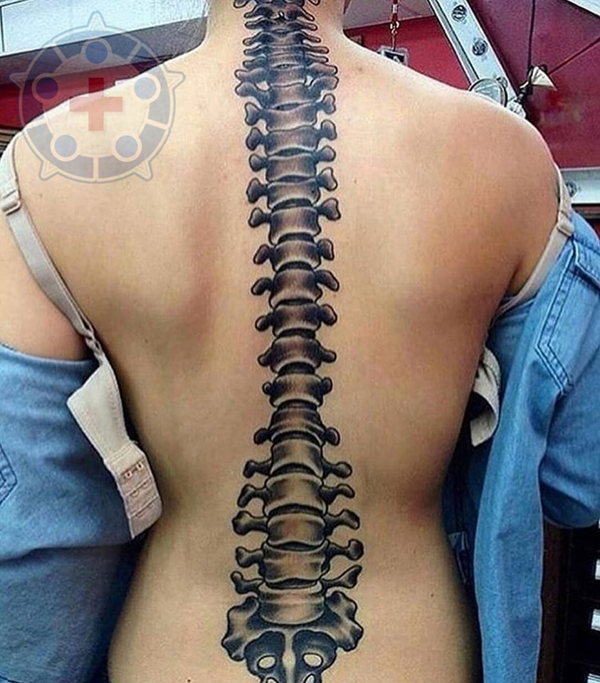

As fraturas de fêmur constituem um dos tipos de traumas mais corriqueiros no cotidiano dos ortopedistas. São lesões que podem advir na região distal, proximal ou na diáfise femoral do paciente e que fazem com que ocorra perda óssea no quesito de integridade (MUNIZ et al., 2007).
A origem dessas fraturas está dividida em dois casos, ambos associados à idade. O primeiro caso, em que se trata de indivíduos mais jovens, com idade entre 15 e 40 anos, está mais relacionado a traumas de alta energia, como acidentes de trânsito e ferimentos por armas de fogo. Já no segundo caso estão incluídos os idosos, que são acometidos por traumas de baixa energia, como queda da própria altura, ou por fatores decorrentes da osteoporose – geralmente na parte esponjosa do osso (SCHWARTSMANN et al., 2000).
No caso das fraturas do colo do fêmur, o tratamento é cirúrgico (osteossíntese), utilizando parafusos canulados no intuito de facilitar o ato. Nesse contexto, cabe ao cirurgião e sua equipe determinar a quantidade de parafusos a serem utilizados. A utilização de três desses itens na forma de um triângulo invertido se mostrou mais estável, apesar de que o uso de apenas dois parafusos também apresentou ser suficiente para o tratamento proposto (BASILE; PEPICELLI; TAKATA, 2012).
O contexto acima citado possui grandes chances de mudar quando pacientes acima de 65 anos de idade são inseridos, apontados na Classificação de Garden como III ou IV. Devemos considerar que a classificação I refere-se a uma fratura incompleta; II é uma fratura completa sem desvio; III é fratura completa com desvio parcial; e na IV há um desvio completo da fratura (BASILE; PEPICELLI; TAKATA, 2012).
CitaçãoConsiderada uma das cirurgias de maior êxito no que diz respeito ao tratamento de patologias ortopédicas, a artroplastia total de quadril (ATQ) trata-se da colocação de uma prótese no lugar da articulação lesionada para tratar dores refratárias derivadas de osteoartroses, fraturas e artrite reumatoide (JONES et al., 2000). É uma cirurgia que substitui a articulação coxofemoral por próteses, sejam elas de cerâmica com polietileno, metal com polietileno, metal com metal ou cerâmica com cerâmica. É chamada de total quando é implantado tanto o componente acetabular como o femoral.
Há dois tipos de artroplastia atualmente que são mais usados: as cimentadas, que utilizam o polimetilmetacrilato (PMMA) entre o implante e o osso, e as não cimentadas, onde futuramente haverá crescimento ósseo nos componentes implantados, para haja uma fixação entre o osso do paciente e o implante usado (GALIA et al., 2017). Já no contexto da fratura transtrocanteriana, que se localiza entre o trocânter maior e o menor, há a opção de tratamento com fixação interna ou utilizando o método de artroplastia de quadril já supracitada. No entanto, o uso da haste intramedular femoral possui vantagens sobre a prótese, uma vez que diminui o tempo de internação pós-cirúrgico, há menor perda sanguínea e a taxa de mortalidade é mais baixa (SBOT, 2011).
Objetivos ordenados
Preservando
o formato
que eu quis
no meu
texto
Voltar ao Topo